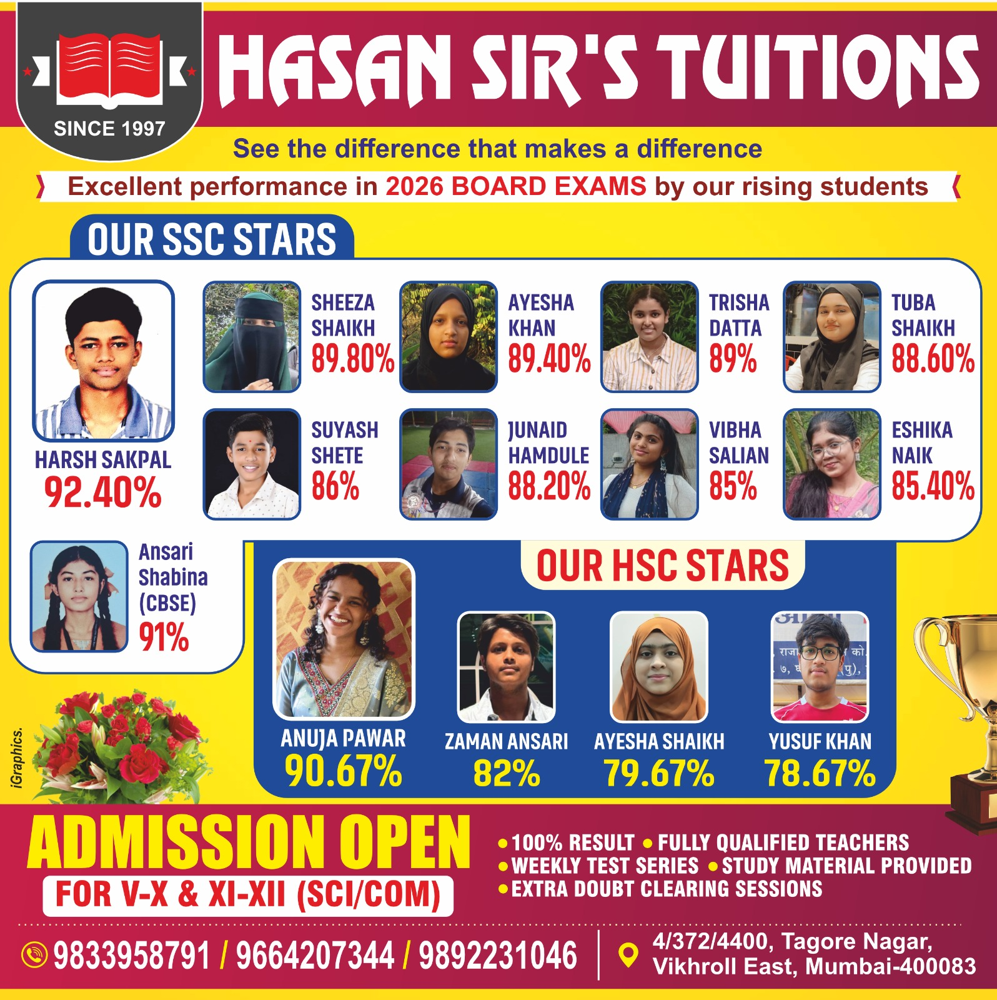

OUR ACHIEVEMENTS
2026 Board Exam Highlights
Student results highlighted in the achievement material supplied for Hassan Sir's Tuitions.

SSC STARS
Outstanding SSC performances
Ansari Shabina
91%CBSESheeza Shaikh
89.80%SSCAyesha Khan
89.40%SSCTrisha Datta
89%SSCTuba Shaikh
88.60%SSCJunaid Hamdule
88.20%SSCSuyash Shete
86%SSCVibha Salian
85%SSCEshika Naik
85.40%SSCHSC STARS
HSC student performances
Anuja Pawar
90.67%HSCZaman Ansari
82%HSCAyesha Shaikh
79.67%HSCYusuf Khan
78.67%HSC100% ResultHighlighted in the supplied institute poster.
Weekly Test SeriesRegular testing support highlighted by the institute.
Study MaterialStudy material provision is highlighted in the supplied poster.
Doubt ClearingExtra doubt-clearing sessions are highlighted.